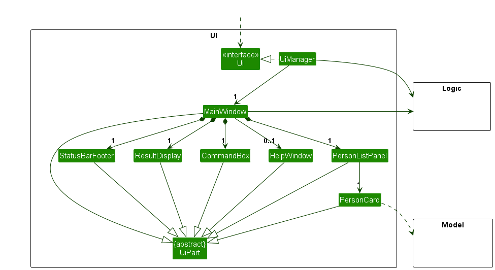
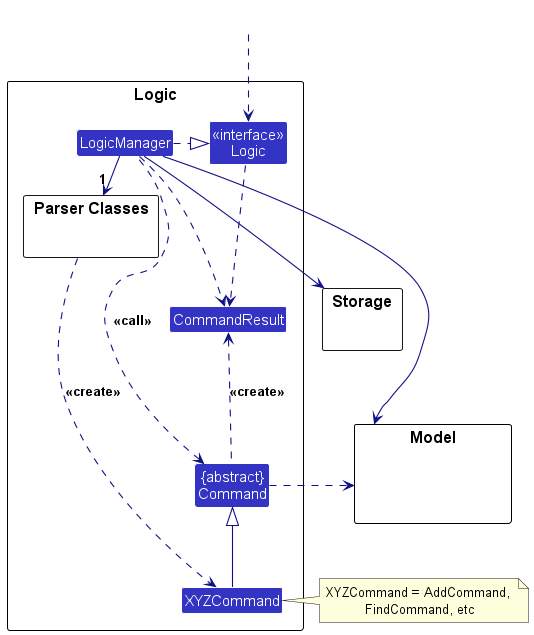
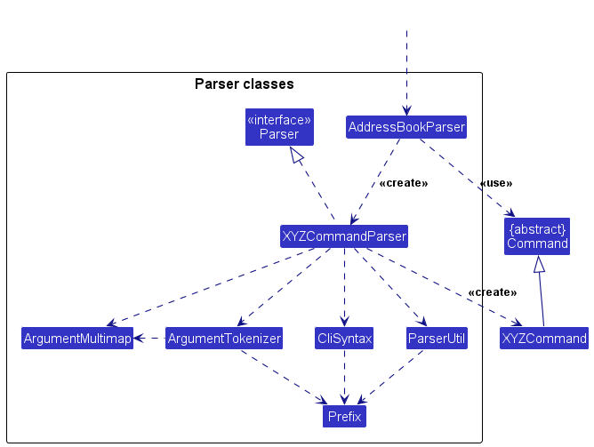
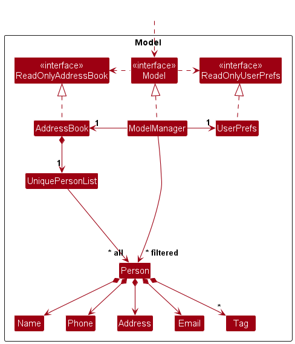
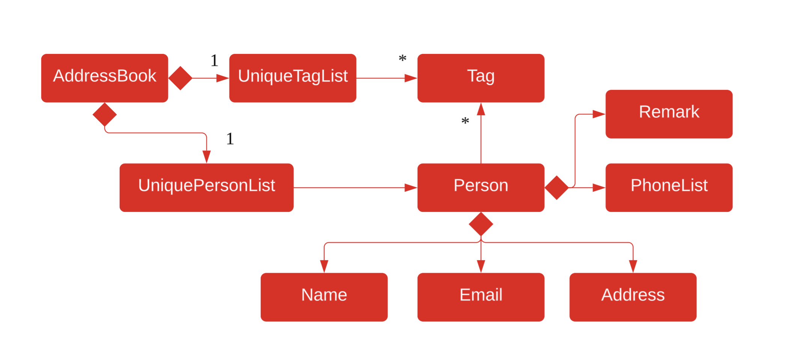
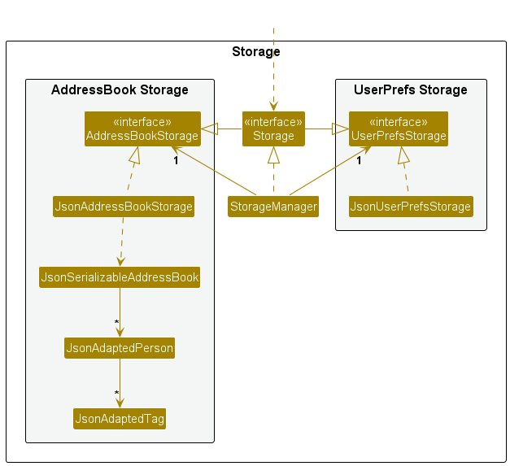
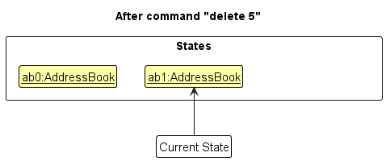
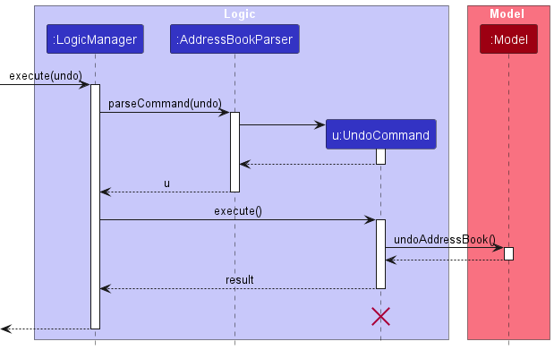

Developer Guide
- Acknowledgements
- Setting up, getting started
- Design
- Implementation
- Documentation, logging, testing, configuration, dev-ops
- Appendix: Requirements
- Appendix: Instructions for manual testing
Acknowledgements
- {list here sources of all reused/adapted ideas, code, documentation, and third-party libraries – include links to the original source as well}
Setting up, getting started
Refer to the guide Setting up and getting started.
Design
.puml files used to create diagrams in this document docs/diagrams folder. Refer to the PlantUML Tutorial at se-edu/guides to learn how to create and edit diagrams.
Architecture

The Architecture Diagram given above explains the high-level design of the App.
Given below is a quick overview of main components and how they interact with each other.
Main components of the architecture
Main (consisting of classes Main and MainApp) is in charge of the app launch and shut down.
- At app launch, it initializes the other components in the correct sequence, and connects them up with each other.
- At shut down, it shuts down the other components and invokes cleanup methods where necessary.
The bulk of the app’s work is done by the following four components:
-
UI: The UI of the App. -
Logic: The command executor. -
Model: Holds the data of the App in memory. -
Storage: Reads data from, and writes data to, the hard disk.
Commons represents a collection of classes used by multiple other components.
How the architecture components interact with each other
The Sequence Diagram below shows how the components interact with each other for the scenario where the user issues the command delete 1.

Each of the four main components (also shown in the diagram above),
- defines its API in an
interfacewith the same name as the Component. - implements its functionality using a concrete
{Component Name}Managerclass (which follows the corresponding APIinterfacementioned in the previous point.
For example, the Logic component defines its API in the Logic.java interface and implements its functionality using the LogicManager.java class which follows the Logic interface. Other components interact with a given component through its interface rather than the concrete class (reason: to prevent outside component’s being coupled to the implementation of a component), as illustrated in the (partial) class diagram below.

The sections below give more details of each component.
UI component
The API of this component is specified in Ui.java

The UI consists of a MainWindow that is made up of parts e.g.CommandBox, ResultDisplay, PersonListPanel, StatusBarFooter etc. All these, including the MainWindow, inherit from the abstract UiPart class which captures the commonalities between classes that represent parts of the visible GUI.
The UI component uses the JavaFx UI framework. The layout of these UI parts are defined in matching .fxml files that are in the src/main/resources/view folder. For example, the layout of the MainWindow is specified in MainWindow.fxml
The UI component,
- executes user commands using the
Logiccomponent. - listens for changes to
Modeldata so that the UI can be updated with the modified data. - keeps a reference to the
Logiccomponent, because theUIrelies on theLogicto execute commands. - depends on some classes in the
Modelcomponent, as it displaysPersonobject residing in theModel.
Logic component
API : Logic.java
Here’s a (partial) class diagram of the Logic component:

The sequence diagram below illustrates the interactions within the Logic component, taking execute("delete 1") API call as an example.

DeleteCommandParser should end at the destroy marker (X) but due to a limitation of PlantUML, the lifeline continues till the end of diagram.
How the Logic component works:
- When
Logicis called upon to execute a command, it is passed to anFinClientParserobject which in turn creates a parser that matches the command (e.g.,DeleteCommandParser) and uses it to parse the command. - This results in a
Commandobject (more precisely, an object of one of its subclasses e.g.,DeleteCommand) which is executed by theLogicManager. - The command can communicate with the
Modelwhen it is executed (e.g. to delete a person).
Note that although this is shown as a single step in the diagram above (for simplicity), in the code it can take several interactions (between the command object and theModel) to achieve. - The result of the command execution is encapsulated as a
CommandResultobject which is returned back fromLogic.
Here are the other classes in Logic (omitted from the class diagram above) that are used for parsing a user command:

How the parsing works:
- When called upon to parse a user command, the
FinClientParserclass creates anXYZCommandParser(XYZis a placeholder for the specific command name e.g.,AddCommandParser) which uses the other classes shown above to parse the user command and create aXYZCommandobject (e.g.,AddCommand) which theFinClientParserreturns back as aCommandobject. - All
XYZCommandParserclasses (e.g.,AddCommandParser,DeleteCommandParser, …) inherit from theParserinterface so that they can be treated similarly where possible e.g, during testing.
Model component
API : Model.java

The Model component,
- stores the address book data i.e., all
Personobjects (which are contained in aUniquePersonListobject). - stores the currently ‘selected’
Personobjects (e.g., results of a search query) as a separate filtered list which is exposed to outsiders as an unmodifiableObservableList<Person>that can be ‘observed’ e.g. the UI can be bound to this list so that the UI automatically updates when the data in the list change. - stores a
UserPrefobject that represents the user’s preferences. This is exposed to the outside as aReadOnlyUserPrefobjects. - does not depend on any of the other three components (as the
Modelrepresents data entities of the domain, they should make sense on their own without depending on other components)
Tag list in the FinClient, which Person references. This allows FinClient to only require one Tag object per unique tag, instead of each Person needing their own Tag objects.
Storage component
API : Storage.java

The Storage component,
- can save both address book data and user preference data in JSON format, and read them back into corresponding objects.
- inherits from both
FinClientStorageandUserPrefStorage, which means it can be treated as either one (if only the functionality of only one is needed). - depends on some classes in the
Modelcomponent (because theStoragecomponent’s job is to save/retrieve objects that belong to theModel)
Common classes
Classes used by multiple components are in the seedu.finclient.commons package.
Implementation
This section describes some noteworthy details on how certain features are implemented.
[Proposed] Undo/redo feature
Proposed Implementation
The proposed undo/redo mechanism is facilitated by VersionedFinClient. It extends FinClient with an undo/redo history, stored internally as an FinClientStateList and currentStatePointer. Additionally, it implements the following operations:
-
VersionedFinClient#commit() — Saves the current address book state in its history. -
VersionedFinClient#undo() — Restores the previous address book state from its history. -
VersionedFinClient#redo() — Restores a previously undone address book state from its history.
These operations are exposed in the Model interface as Model#commitFinClient(), Model#undoFinClient() and Model#redoFinClient() respectively.
Given below is an example usage scenario and how the undo/redo mechanism behaves at each step.
Step 1. The user launches the application for the first time. The VersionedFinClient will be initialized with the initial address book state, and the currentStatePointer pointing to that single address book state.

Step 2. The user executes delete 5 command to delete the 5th person in the address book. The delete command calls Model#commitFinClient(), causing the modified state of the address book after the delete 5 command executes to be saved in the FinClientStateList, and the currentStatePointer is shifted to the newly inserted address book state.

Step 3. The user executes add n/David …​ to add a new person. The add command also calls Model#commitFinClient(), causing another modified address book state to be saved into the FinClientStateList.

Model#commitFinClient(), so the address book state will not be saved into the FinClientStateList.
Step 4. The user now decides that adding the person was a mistake, and decides to undo that action by executing the undo command. The undo command will call Model#undoFinClient(), which will shift the currentStatePointer once to the left, pointing it to the previous address book state, and restores the address book to that state.

currentStatePointer is at index 0, pointing to the initial FinClient state, then there are no previous FinClient states to restore. The undo command uses Model#canUndoFinClient() to check if this is the case. If so, it will return an error to the user rather
than attempting to perform the undo.
The following sequence diagram shows how an undo operation goes through the Logic component:

UndoCommand should end at the destroy marker (X) but due to a limitation of PlantUML, the lifeline reaches the end of diagram.
Similarly, how an undo operation goes through the Model component is shown below:

The redo command does the opposite — it calls Model#redoFinClient(), which shifts the currentStatePointer once to the right, pointing to the previously undone state, and restores the address book to that state.
currentStatePointer is at index FinClientStateList.size() - 1, pointing to the latest address book state, then there are no undone FinClient states to restore. The redo command uses Model#canRedoFinClient() to check if this is the case. If so, it will return an error to the user rather than attempting to perform the redo.
Step 5. The user then decides to execute the command list. Commands that do not modify the address book, such as list, will usually not call Model#commitFinClient(), Model#undoFinClient() or Model#redoFinClient(). Thus, the FinClientStateList remains unchanged.

Step 6. The user executes clear, which calls Model#commitFinClient(). Since the currentStatePointer is not pointing at the end of the FinClientStateList, all address book states after the currentStatePointer will be purged. Reason: It no longer makes sense to redo the add n/David …​ command. This is the behavior that most modern desktop applications follow.

The following activity diagram summarizes what happens when a user executes a new command:

Design considerations:
Aspect: How undo & redo executes:
-
Alternative 1 (current choice): Saves the entire address book.
- Pros: Easy to implement.
- Cons: May have performance issues in terms of memory usage.
-
Alternative 2: Individual command knows how to undo/redo by
itself.
- Pros: Will use less memory (e.g. for
delete, just save the person being deleted). - Cons: We must ensure that the implementation of each individual command are correct.
- Pros: Will use less memory (e.g. for
{more aspects and alternatives to be added}
[Proposed] Data archiving
{Explain here how the data archiving feature will be implemented}
Documentation, logging, testing, configuration, dev-ops
Appendix: Requirements
Product scope
Target user profile:
- üíº Financial advisors
- üñ•Ô∏è Tech-savvy
- üìá has a need to manage a significant number of contacts
- üìù has a need to add notes to keep track of their clients‚Äô preferences
- ⌨️ prefer typing
- üñ±Ô∏è is reasonably comfortable using CLI apps
Value proposition:
- üöÄ Provide fast access to client details
- ✨ Easy adding of new clients and required data
- ⌨️ Optimized for users who prefer CLI
- üìã Allows tracking of multiple details such as clients hobbies, preferences, status etc
User stories
Priorities: High (must have) - * * *, Medium (nice to have) - * *, Low (unlikely to have) - *
| Priority | As a …​ | I want to …​ | So that I can…​ |
|---|---|---|---|
* * * |
new user | see usage instructions | refer to instructions when I forget how to use the App |
* * * |
user | add a new person |   |
* * * |
user | delete a person | remove entries that I no longer need |
* * * |
user | read details about my clients | I can tell what my clients have |
* * * |
user | add notes to a person | record important details about my business dealings with them |
* * * |
user | search for clients contacts | I can immediately get the data I require of my client |
* * * |
user | store multiple phone numbers and emails for a contact | I can reach them through different channelse |
* * * |
user | find a person by name | locate details of persons without having to go through the entire list |
* * * |
user | hide private contact details | minimize chance of someone else seeing them by accident |
* |
user with many persons in the address book | sort persons by name | locate a person easily |
Use cases
(For all use cases below, the System is the FinClient and the Actor is the user, unless specified otherwise)
Use case: Delete a person
MSS
- User requests to list persons
- FinClient shows a list of persons
- User requests to delete a specific person in the list
-
FinClient deletes the person
Use case ends.
Extensions
-
2a. The list is empty.
Use case ends.
-
3a. The given index is invalid.
-
3a1. FinClient shows an error message.
Use case resumes at step 2.
-
Use case: Add a person
MSS
- User requests to add a person
- FinClient prompts for the person’s details
- User provides the person’s details
-
FinClient adds the person
Use case ends.
Extensions
-
3a. User provides an invalid detail.
-
3a1. FinClient shows an error message.
Use case resumes at step 2.
-
3a2. User provides a duplicate detail.
-
3a2.1. FinClient shows an error message.
Use case resumes at step 2.
-
-
-
3b. User provides no phone numbers or invalid numbers.
-
3b1. FinClient shows an error message
Use case resumes at step 2.
-
-
3c. User provides too many phone numbers.
-
3c1. FinClient shows an error message
Use case resumes at step 2.
-
Use case: Find a person
MSS
- User requests to find a person by name
-
FinClient shows the person’s details
Use case ends.
Extensions
-
2a. The person is not found.
-
2a1. FinClient shows an error message.
Use case ends.
-
Use case: Hide a person’s details
MSS
- User requests to hide a person’s detail by name
-
FinClient obscures the person’s details
Use case ends.
Use case: Reveal a person’s details
MSS
- User requests to reveal a person’s detail by name
-
FinClient reveals the person’s details
Use case ends.
Use case: Add remarks to a person
MSS
- User requests to add remarks to a person
- FinClient prompts for the remarks
-
User provides the remarks
Use case ends.
Extensions
-
3a. User provides an empty remark.
-
3a1. FinClient shows an error message.
Use case resumes at step 2.
-
Non-Functional Requirements
- Should work on any mainstream OS as long as it has Java
17or above installed. - Should be able to hold up to 1000 persons without a noticeable sluggishness in performance for typical usage.
- A user with above average typing speed for regular English text (i.e. not code, not system admin commands) should be able to accomplish most of the tasks faster using commands than using the mouse.
Glossary
- Mainstream OS: Windows, Linux, Unix, MacOS
- Private contact detail: A contact detail that is not meant to be shared with others
Appendix: Instructions for manual testing
Given below are instructions to test the app manually.
Launch and shutdown
-
Initial launch
-
Download the jar file and copy into an empty folder
-
Double-click the jar file Expected: Shows the GUI with a set of sample contacts. The window size may not be optimum.
-
-
Saving window preferences
-
Resize the window to an optimum size. Move the window to a different location. Close the window.
-
Re-launch the app by double-clicking the jar file.
Expected: The most recent window size and location is retained.
-
-
{ more test cases …​ }
Deleting a person
-
Deleting a person while all persons are being shown
-
Prerequisites: List all persons using the
listcommand. Multiple persons in the list. -
Test case:
delete 1
Expected: First contact is deleted from the list. Details of the deleted contact shown in the status message. Timestamp in the status bar is updated. -
Test case:
delete 0
Expected: No person is deleted. Error details shown in the status message. Status bar remains the same. -
Other incorrect delete commands to try:
delete,delete x,...(where x is larger than the list size)
Expected: Similar to previous.
-
-
{ more test cases …​ }
Saving data
-
Dealing with missing/corrupted data files
- {explain how to simulate a missing/corrupted file, and the expected behavior}
-
{ more test cases …​ }